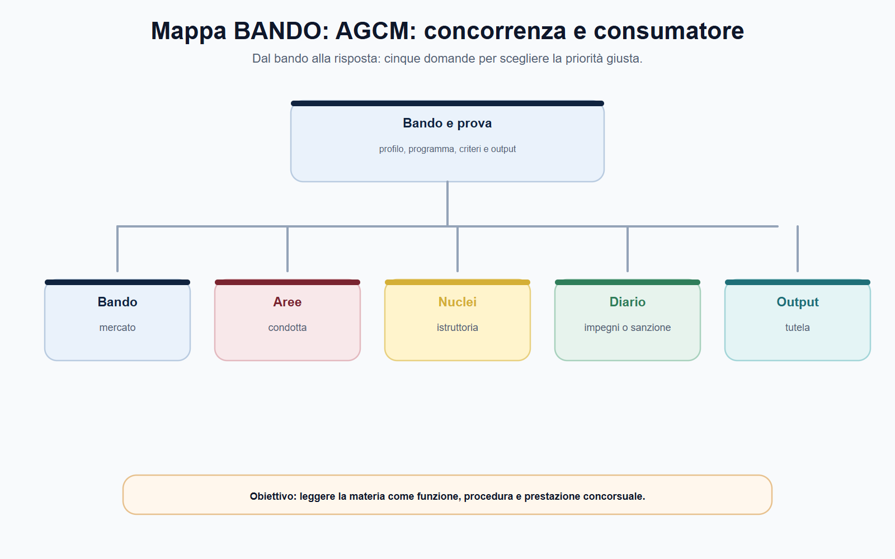
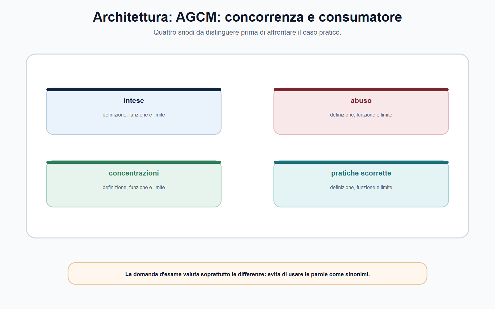
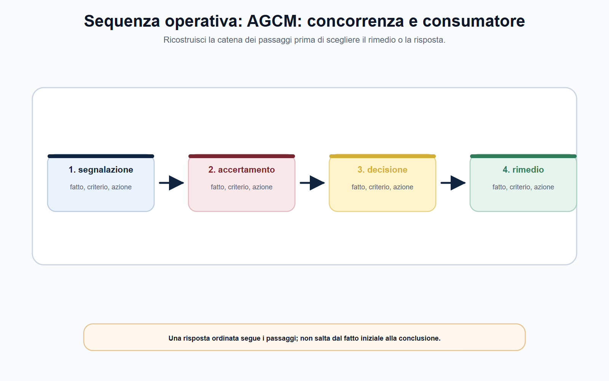
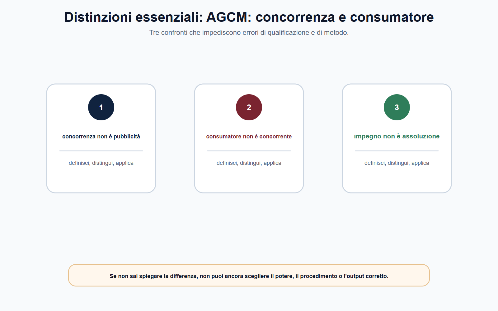

VOL-05 · Capitolo 08
M-FC05
AGCM: concorrenza,
consumatore e pratiche scorrette
L’Autorità Garante della Concorrenza e del Mercato è spesso ricordata come «l’Autorità antitrust». La formula è utile, ma incompleta. L’AGCM applica la disciplina della concorrenza e svolge competenze di tutela del consumatore. Le due aree non coincidono per presupposti, soggetti, prova, procedimento o risultato.
01 · Il problema in prova
Due tutele, due fattispecie
Un’intesa restrittiva riguarda il coordinamento tra imprese e può compromettere il libero gioco concorrenziale. Una pratica commerciale scorretta riguarda la condotta di un professionista verso i consumatori e può alterarne la scelta economica. Lo stesso operatore e lo stesso prodotto possono far emergere profili diversi: questo non autorizza a sovrapporre le discipline.
Che cos’è
Una competenza di qualificazione: quale interesse è protetto, quale norma può applicarsi, quali fatti vanno provati, chi partecipa, quale esito è possibile.
A che serve in prova
A non scegliere il rimedio prima della fattispecie. Identifica rapporto, soggetti, fonte e fatto; soltanto dopo valuti istruttoria, poteri e decisione.
Il danno al consumatore non dimostra da solo un’intesa.
Una posizione di mercato elevata non dimostra da sola una pratica scorretta. Ogni conclusione richiede la fattispecie e la prova proprie del procedimento applicato.
02 · BANDO
Cinque decisioni su questo capitolo
Le parole «AGCM», «antitrust», «consumatore», «pratica scorretta» e «concentrazione» richiedono prima una classificazione del caso.
| Che cosa fai | Se la salti | |
|---|---|---|
| B — Bando | Cerca intese, abusi, concentrazioni, pratiche scorrette, pubblicità, procedimento AGCM. | Studi un elenco di sanzioni o di cronaca. |
| A — Aree | Separa tutela del processo concorrenziale e tutela della decisione del consumatore. | Sovrapponi antitrust e consumer. |
| N — Nuclei | Intesa ≠ abuso ≠ concentrazione; ingannevole ≠ aggressiva. | Tratti «grande impresa» come illecito. |
| D — Diario | Segna segnalazione = prova, AGCM = risarcimento, quota alta = abuso. | Ripeti le tre trappole all’orale. |
| O — Output | Schema di qualificazione, analisi di un messaggio, sequenza fonte–fatto–prova–decisione. | Etichetta grave senza istruttoria. |
03 · Schema
Dal bando alla fattispecie
La domanda guida è semplice: il fatto riguarda un coordinamento o un potere di mercato tra imprese, oppure una condotta del professionista capace di orientare scorrettamente la scelta del consumatore?

La tavola orienta la lettura di intese e separa il perimetro antitrust dalle eccezioni consumer.
04 · Doppia prospettiva
Mercato tra imprese, scelta del consumatore
La legge n. 287/1990 attribuisce all’AGCM competenze su intese restrittive, abusi di posizione dominante e concentrazioni; nei casi che incidono sul commercio tra Stati membri entra il diritto dell’Unione e il raccordo nella rete ECN. Il Codice del consumo guarda alla relazione tra professionista e destinatario dell’offerta.
| Tutela della concorrenza | Tutela del consumatore | |
|---|---|---|
| Domanda iniziale | Il comportamento altera il processo competitivo? | Il professionista informa o agisce in modo scorretto? |
| Relazione | Tra imprese, mercato e struttura competitiva. | Tra professionista e consumatore; nei casi previsti, anche microimpresa. |
| Nuclei tipici | Intese, abuso, concentrazioni. | Pratiche scorrette, diritti contrattuali, clausole vessatorie, pubblicità. |
| Fatti | Coordinamento, potere, mercato, effetti o rischio concorrenziale. | Condotta, messaggio, omissione, destinatario, diligenza, scelta. |
05 · Concorrenza
Processo competitivo tra imprese
Intese, abuso di posizione dominante, concentrazioni. La posizione dominante non è illecita in sé: un’impresa può crescere per efficienza, innovazione o preferenza degli utenti. La legge vieta l’abuso, non la dimensione.
05 · Consumatore
Decisione economica del destinatario
Pratiche scorrette, pubblicità, clausole vessatorie. Il punto non è dimostrare che un mercato sia concentrato: è valutare una condotta in rapporto alla diligenza professionale e all’idoneità a condizionare il consumatore medio.
06 · Antitrust
Intesa, abuso, concentrazione
Il mercato rilevante è una chiave analitica, non una formula. Quote, barriere, sostituibilità e domanda acquistano senso soltanto nel loro insieme. Il capitolo sull’economia della regolazione offre il metodo: l’AGCM lo applica entro la fattispecie e il potere definiti dalla fonte.
| Istituto | Che cosa va verificato | Errore da evitare |
|---|---|---|
| Intesa | Coordinamento tra imprese e presupposti della restrizione rilevante. Non serve solo un contratto scritto. | Cercare soltanto un accordo formalizzato. |
| Abuso | Posizione dominante, condotta e carattere abusivo. | Confondere dominanza e abuso; «grande impresa» = illecito. |
| Concentrazione | Operazione, controllo, mercato e impatto nel quadro legale. Le soglie si verificano sul testo vigente. | Trattarla come sanzione per un illecito pregresso. |
07 · Architettura
Abuso e concentrazioni non si sovrappongono
Le concentrazioni riguardano una crescita esterna: fusione o acquisizione del controllo, cioè della possibilità di esercitare un’influenza determinante. Il controllo è orientato alla struttura futura, non all’accertamento di una condotta già tenuta.

Quattro snodi da distinguere prima del caso: intese, abuso, concentrazioni, pratiche.
08 · Pratiche scorrette
Ingannevoli o aggressive, sempre verificabili
Per pratica commerciale si intende un insieme ampio di comportamenti del professionista: azioni, omissioni, dichiarazioni, comunicazioni e pubblicità, anche online. Il criterio generale non è l’insoddisfazione dell’acquirente. Una pratica è scorretta quando contrasta con la diligenza professionale e falsa, o è idonea a falsare in misura apprezzabile, il comportamento economico del consumatore medio.
Ingannevole
Informazioni non veritiere, parziali o presentate in modo da indurre in errore: prezzo, caratteristiche, disponibilità, condizioni.
Aggressiva
Molestie, coercizione o indebito condizionamento che comprimono la libertà di scelta o di comportamento.
Istruttoria
Chi è il professionista, quale pratica, a chi è diretta, quale scelta può essere alterata, quale potere è consentito.
In alcuni ambiti la disciplina estende la tutela anche alle microimprese, nei termini previsti. Non generalizzare l’estensione a ogni regola consumeristica: verificare destinatario e disposizione.
09 · Procedimento
La segnalazione non prova l’illecito
L’AGCM può avviare un procedimento d’ufficio o a seguito di segnalazione. Nei procedimenti consumeristici il regolamento AGCM del 2024 disciplina, tra l’altro, ambito, avvio, partecipazione, accesso e decisione. Sanzione, impegno, misura correttiva e misura cautelare restano distinti: la presenza di impegni non è trattativa libera né riconoscimento automatico della violazione.
L’AGCM può accertare, vietare o sanzionare nei limiti della fonte. Non liquida al singolo il risarcimento del danno. La domanda «l’Autorità può intervenire?» è distinta da «quale rimedio individuale va chiesto al giudice?».
Dai fatti alla competenza e alla decisione: la sequenza non salta alla multa.

10 · Competenze vicine
Pubblicità, clausole, rating di legalità
Non «l’AGCM tutela sempre il consumatore»: l’Autorità esercita poteri diversi in materie diverse. L’istituto si ricostruisce dalla base legale e dal regolamento procedimentale.
| Istituto | Che cosa non confondere |
|---|---|
| Pubblicità ingannevole e comparativa illecita (d.lgs. n. 145/2007) | Può riguardare i rapporti tra professionisti, non solo il consumatore. |
| Clausole vessatorie (art. 37-bis Codice del consumo) | Accertamento di vessatorietà in condizioni generali, moduli o formulari, con regole proprie. |
| Rating di legalità | Indicatore per imprese che ne possiedono i requisiti. Non è una patente generale né una sanzione. |
«Ogni pubblicità poco chiara prova anche un illecito antitrust.» Una comunicazione poco trasparente può integrare un profilo consumeristico o pubblicitario; intesa e abuso richiedono presupposti propri su imprese, mercato e processo concorrenziale.
11 · Caso guidato
L’offerta «senza costi»
Una piattaforma pubblicizza un abbonamento «senza costi». Solo nelle schermate successive, con testo poco visibile, compaiono prezzo mensile, rinnovo automatico e modalità per disdire. Un concorrente chiede una sanzione per abuso di posizione dominante; gli utenti segnalano di avere aderito senza comprendere le condizioni.
| Colonna | Che cosa fare |
|---|---|
| Fatti documentati | Acquisire messaggi, percorso di acquisto, condizioni, schermate, data e destinatari. |
| Qualificazione da verificare | Possibile pratica ingannevole; se le clausole generano squilibrio, perimetro delle vessatorie in via autonoma. |
| Antitrust | L’abuso non si deduce dalla sola scarsa trasparenza. Servono mercato rilevante, dominanza e condotta abusiva. |
| Poteri | Solo l’esito consentito dalla disciplina. Non promettere al segnalante un risarcimento che non rientra nei poteri AGCM. |
12 · Verifica
Due domande da saper spiegare
Illustri le competenze AGCM in concorrenza e tutela del consumatore.
Ex legge n. 287/1990: intese, abusi, concentrazioni; la posizione dominante da sola non è vietata. Ex Codice del consumo: pratiche scorrette quando contrastano con la diligenza professionale e sono idonee a falsare apprezzabilmente la decisione del consumatore medio; possono essere ingannevoli o aggressive. La segnalazione non prova l’illecito.
Un’impresa con quota molto elevata commette automaticamente un abuso?
No. La quota può essere un elemento dell’analisi. Occorre prima verificare la posizione dominante nel mercato rilevante e poi una condotta abusiva. La legge vieta l’abuso, non la posizione dominante in quanto tale.
13 · Mini-esercizio
Tre situazioni, nessuna sanzione ancora
Classifica indicando l’ipotesi da verificare e la prima prova utile. La sicurezza non dipende dall’anticipare la decisione.
| Situazione | Ipotesi da verificare | Prima prova utile |
|---|---|---|
| Tre imprese concorrenti annunciano contemporaneamente le stesse condizioni | Possibile intesa o coordinamento restrittivo. | Comunicazioni, contatti, documenti commerciali, struttura del mercato. |
| Un operatore impone a un concorrente condizioni di accesso discriminatorie | Possibile abuso, previa verifica della dominanza. | Mercato rilevante, potere, condizioni applicate a soggetti equivalenti. |
| Un sito omette nel primo messaggio costi essenziali di un abbonamento | Possibile pratica ingannevole. | Screenshot datati, flusso di acquisto, condizioni, destinatari. |
14 · Errori
Distinzioni da tenere ferme

Se non sai spiegare la differenza tra concorrenza e tutela del consumatore, non puoi ancora scegliere il potere.
Non inventare soglie di fatturato, termini o importi. Abuso e concentrazioni non sono espressioni equivalenti. La missione istituzionale non attribuisce qualsiasi potere né confonde vigilanza, rimedio individuale e sanzione.
15 · Da tenere ferme
Cinque regole, con il perché
1. AGCM tutela concorrenza e consumatori con procedimenti e fattispecie distinti.
2. Nell’antitrust si distinguono intesa, abuso e concentrazione: la posizione dominante non è vietata in sé.
3. Nelle pratiche scorrette si verificano diligenza professionale e idoneità a condizionare in misura apprezzabile il consumatore medio.
4. Una segnalazione non prova l’illecito: servono istruttoria, contraddittorio, evidenze e motivazione.
5. L’AGCM non liquida il risarcimento individuale del danno, che segue le vie competenti.
Prossimo capitolo
ARERA: energia, gas, acqua, rifiuti e tariffe
Dalla qualificazione AGCM ai servizi di pubblica utilità. La tariffa non è un prezzo libero né il costo dichiarato dal gestore: è un punto di arrivo di qualità, dati e tutela.